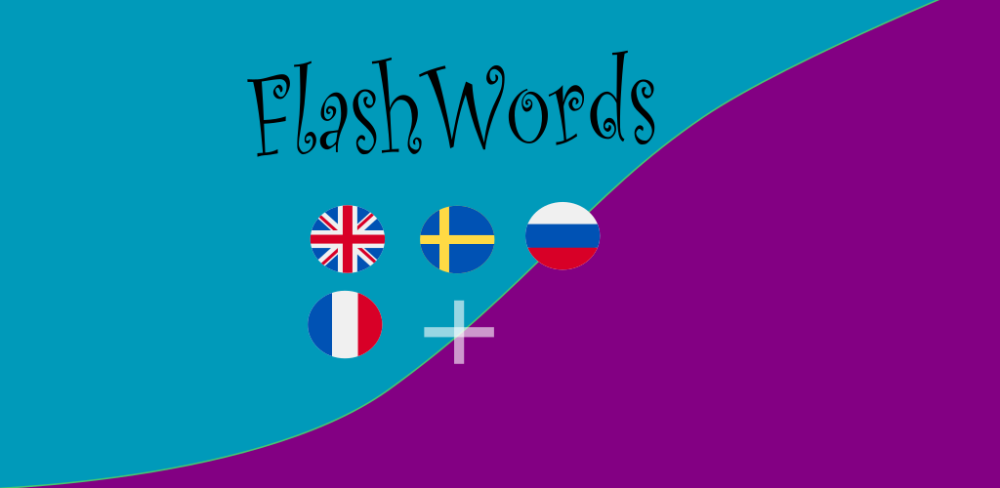

Language learning app.
Create your own Quiz (Flashcard set) from a book or any subject of interest e.g food or greetings. The words can
be
looked up in online dictionary or entered manually. Play games with the entered questions, listen to the
pronunciation of the words rehearse and more.
To create a Quiz (Flashcard set)
- Press "New Word Set"
- Enter a name e.g "Animals" for the new Quiz in the Tab "Home">
- Select Language pair e.g Swedish-Russian (sv-ru)
- Press "Create"
- Press "New Word Set" again to hide the create options
- Select tab with the "Edit" ">
- Enter a word e.g hund (dog) in this case pres button "sv-ru" to look up in online dictionary
- Select a synonym if more feasible by touching it
- Press "Add"
- Look up in Wiktionary by press button "Wiki" You can copy from there and enter in the Quiz as well
- Repeat until you have a convenient number of word pairs for a WordQuiz
- To run the Quiz select Quiz from the Games tab
- You can rehearse Quiz in "Edit" tab
- If "i" is visible you have extra information (if enterad when creating/edit Quiz)), to view it press "i"
- Go a head and swipe left , if you dont know the answer or right if you are confident until you pass the exam!
- To view the answer press the flip symbol
![]()
- If you like to practice your spelling press the keyboard icon the swiping is then locked until you get type
the correct answer
- If you find some thing wrong go back to "Edit", the question should be selected, press the edit symbol and fix
the error.
You can also include extra information e.g word class.
Games
- Quiz (Flashcards) - Answer questions turn around to see answer
- Hang man - The well known hangman game with words from the selected Quiz
- CrossWord - A crossword is generated from the selected Quiz
Quiz Modes
- Normal - Question as text and swipe to right if you know the answer or flip around to se the answer
- Text - Text mode press the keyboard symbol. Then type the answer and swipe when you typed the right
answer
- Illustrated - Press image symbol to show the illustration if available
- Speech mode - Press the headphones. You listen to the questions
To retake a Quiz after pass
- Press "Edit"
- Press "Reset"
- Green question means that it been answered
- Bold that extra information is available
- Press "Quiz" and you can repat the Quiz
- Press "Reverse" and you can take the Quiz in reverse order
To Download an available Quiz
- Press "Download" from cloud ">
- Scroll around, a description off the quiz i shown at the top
- You can enter a search pattern by a key string and/or a optional language key e.g "sv" available quiz in
swedish
are listed
- Select a Quiz with prefered language combination
- Press "Download"
To Upload a Quiz
- Press the "Upload to cloud symbol
- Add a short description
- Enter a key (password), this is needed if you want to remove the Quiz
- Press "Upload"
To Edit or Add to a Quiz
- Press "Edit" tab
- Select the word pair with the edit symbol
- If you are running a Quiz the current word pair is selected for edit just press Edit tab and do corrections
needed
- To look up detailed description of word by press button "Wiki"
- Enter the new information
- You can do search for information by the info in the clipboard by pressing the search symbol in the upper
left.
- You can also change the individual status of word e.g uncheck it if you think you need to rehearse that
particular word
Add images
- You can add an image representing the word by pressing the image symbol in the edit dialog. Copy the word and
press search symbol and look for images download and go back and select image symbol an select the newly
downloaded image
- To download un image "press and hold" and press button "Save for use in WordQuiz"
- Select the image in the edit dialog
- Press Update to update the local database
- To update it on server folow the steps in "To Upload a Quiz" but press "Update" at the end
To Delete an uploaded Quiz
- Press "Download"
- Select the quiz to remove
- Press "Remove"
- Enter the password entered when it was uploaded
Credits
- yandex, mymemory.translated.net, voicerss.org